Coordinating Parallel Builds with Buildbot
Coordinating Parallel Builds
with Buildbot
Buildbot is an open-source framework for automating software build, test, and release processes.

Modeling Parallel Processes: Steps
svn up
configure
make
make test
make dist
Modeling Parallel Processes: A Job
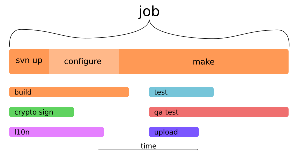
Modeling: Multiple Platforms
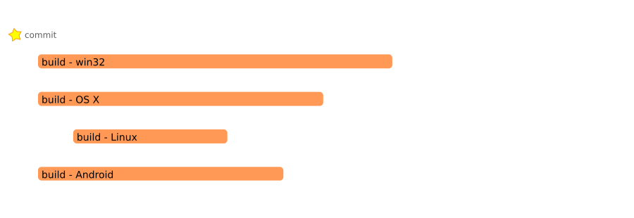
Each job runs on a different host with a different OS, in parallel.
Modeling: Parallel Build & Tests
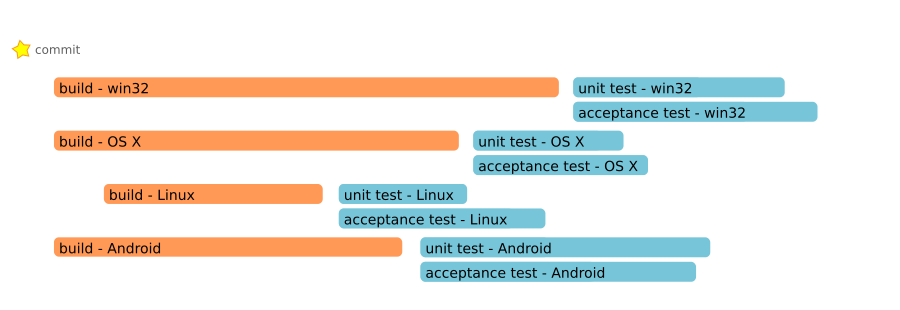
Run tests on each platform after the build is complete. Tests may run in parallel on multiple hosts
Modeling: Release Automation
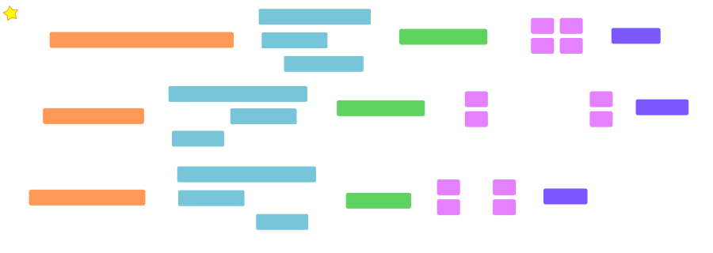
Release automation brings more jobs of more types.
Build Automation
is
Job Scheduling
The connections between jobs define the control flow, in the form of a directed acyclic graph (DAG).
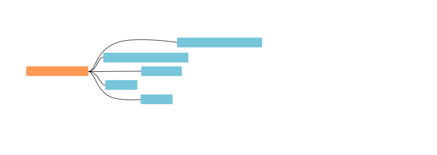
One job submits several other jobs, with different parameters (e.g., test shard, platform, locale)
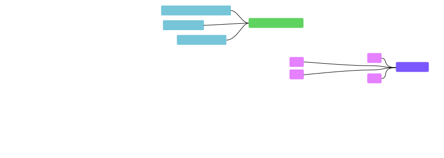
A job begins after prerequisite jobs are complete
- Build automation is job scheduling
- Related jobs form a DAG
- Branching is relatively easy
- Joining is hard - event stream querying
- Reporting across multiple jobs involves tradeoffs
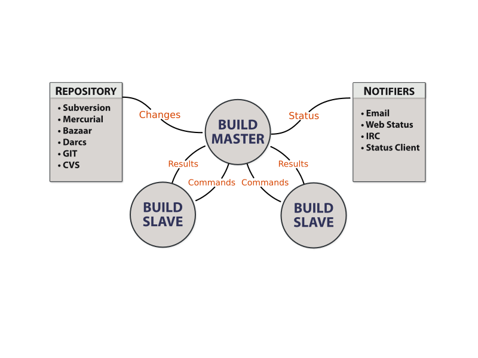
Buildbot: Master Organization
build = SingleBranchScheduler(
name="build",
builderNames=[
"build-win32",
"build-osx",
"build-linux",
"build-android"])
Buildbot: Dependent Scheduler
build = SingleBranchScheduler(
name="build",
builderNames=['bld-linux', 'bld-win32'])
dep = Dependent(
name="test",
builderNames=['tst-linux', 'tst-win32'],
upstream=build)
Buildbot: Dependent Scheduler
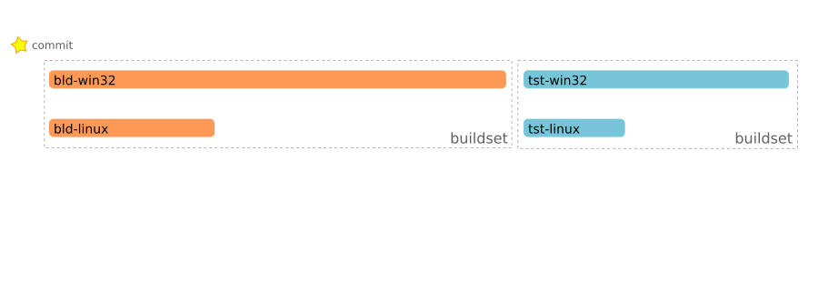
Buildbot: Triggerable Scheduler
test = Triggerable(
name="test",
builderNames=['tst-linux', 'tst-win32'])
test = Triggerable(
name="l10n",
builderNames=['l10n-zh_CN', 'ruby-en_GB'])
# ----
f.addStep(Trigger(
schedulerNames=['test', 'l10n'],
waitForFinish=True))
Buildbot: Triggerable Scheduler
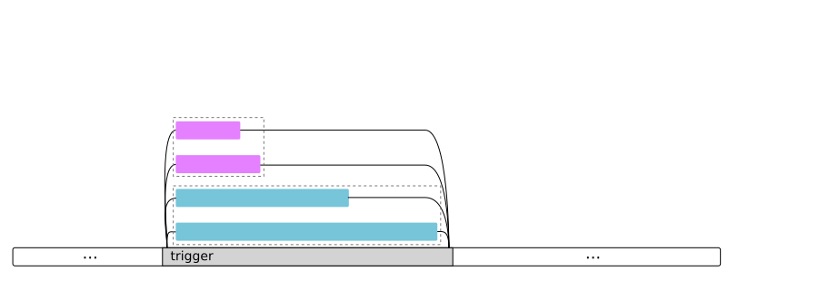
Buildbot: Controlling Builds
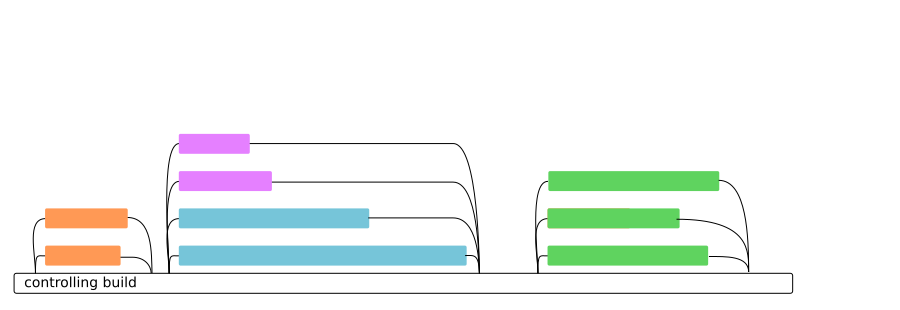
Buildbot best practice: manage parallel execution from a controlling build.
mn = MailNotifier(
buildsetSummary=True,
mode=['problem'],
extraRecipients=['listaddr@example.org'])
Buildbot: Flocks (Future Work)
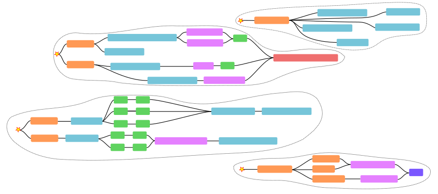
A "flock" is an set of associated (connected) jobs.
- Concurrency is the future
- Modeling this generally gives users expressive power
- Build automation is job scheduling
- Connections between concurrent jobs form larger processes
- Buildbot has some support for branching and joining, with plans for more
- All schedulers - fire & forget
- Dependent - join on buildsets
- Triggerable - arbitrary branching, all-or-nothing joins